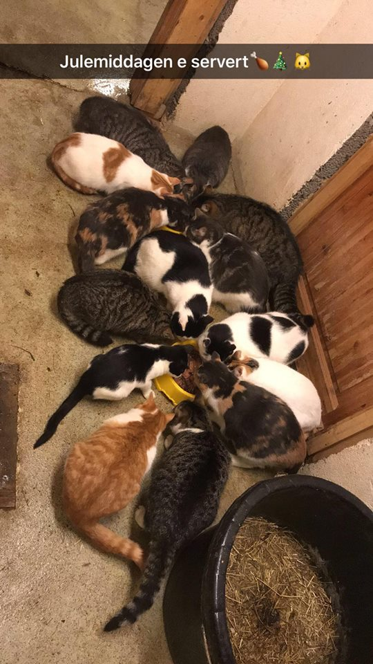
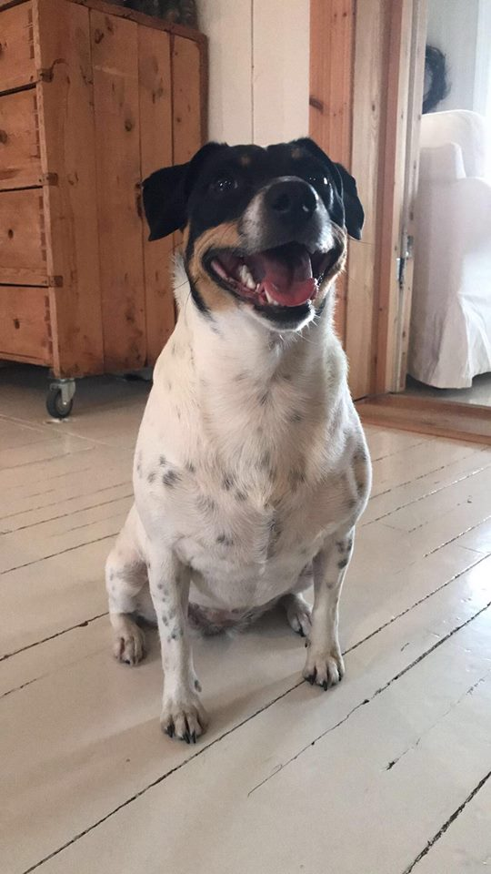
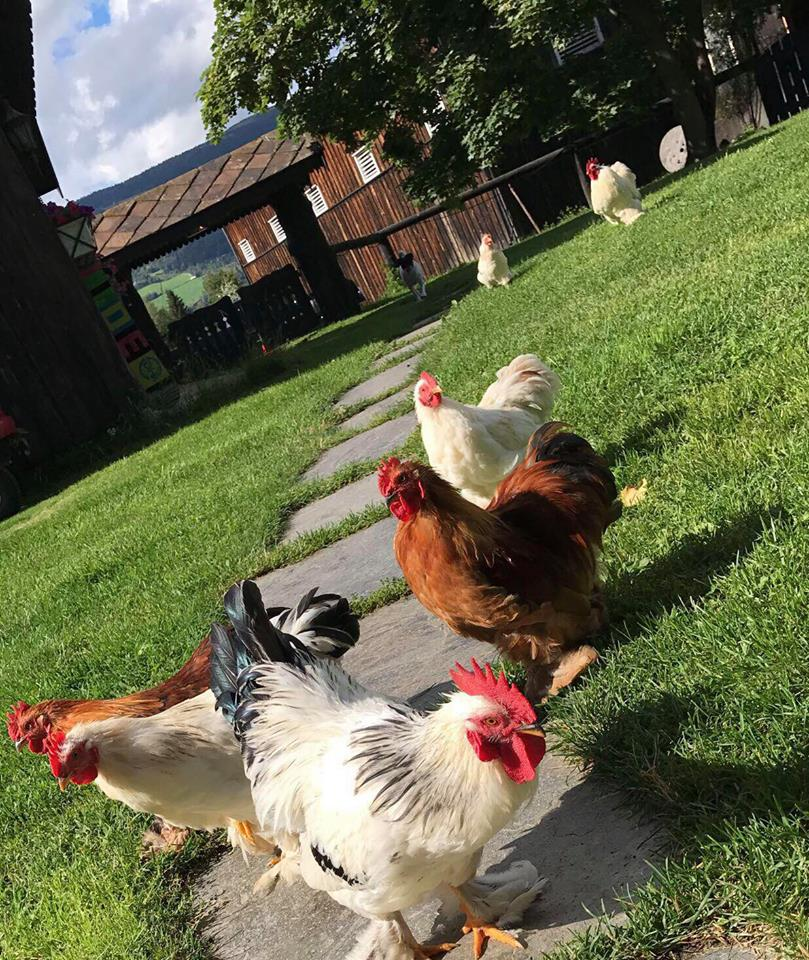
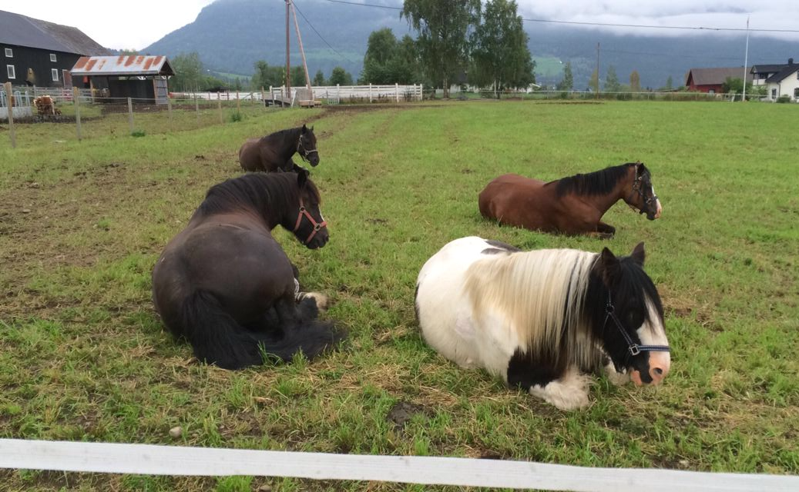

Om produksjonen
Hjemme på garden driver vi med melkeproduksjon, pluss at vi har omtrent 5-10 okser som vi forer opp og sender til slakt hvert år.
Melkeproduksjon er en stor jobb. Kua skal melkes 2 ganger daglig, morgen og kveld. Det er fint om man greier å ha faste tidspunkter som man er i fjøset.
Når man skal drive med den slags produksjon, er det veldig viktig at kua får riktig kraftfor, grovfor og vann gjennom hele dagen.




Her setter jeg opp en tabell over hvilke dyr vi har og hvor mange vi har av hver.
| Hva slags dyr | Antall | Bruksområde |
|---|---|---|
| Ku | ca. 50 stk | Melkeproduksjon |
| Hest | 4 stk | Hobby |
| Høns | 7 stk | Egge produksjon |
| Katt | 15 stk | Holde borte skadedyr |
| Hund | 1 stk | Kos |
Linker